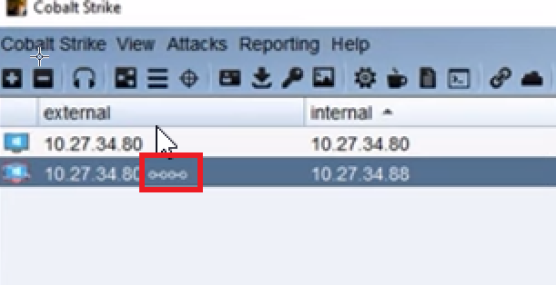

SSH to get files
ssh aggressor@<teamserver IP>
- contrains IP address log <matches to targets>
- web logs
- event logs
- screenshots
- keystrokes
- etc
This symbol means it tunnels through another host- if you want to speed up connections you need to adjust the host it's tunneling through
